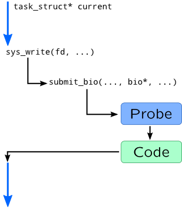
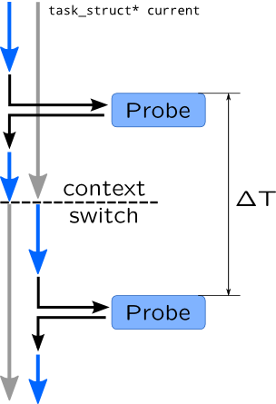

Probes
Definition
For example, let's see how synchronous writing to a disk is performed in Linux and what can be traced:

When process wants to start synchronous write, it issues write() system call and by doing that it transfers control to a kernel code, to a sys_write() function in particular. This function eventually calls a submit_bio() function which pushes data from user process to a queue of corresponding disk device. If we attach probes to these functions, we can gather the following information:
-
Process and thread which started input/output which is accessible via global
currentpointer.
-
File descriptor number which is passed as first argument of
sys_writeand calledfd.
-
Disk I/O parameters such as size and requested sector from
biostructure.
To satisfy this requirements, tracing languages provide mechanisms of defining probes. Definition of SystemTap probe begins with probe keyword followed by probe name and body of probe handler. Name is a dotted-symbol sequence, where each symbol may have optional parameters in braces. SystemTap supports wildcards in probe names or several probe names in probe clause if you need to use same handler for multiple probes. For example:
probe kernel.function("vfs_*") {
// Actions
}
probe timer.ms(100) {
// Actions
}
probe scheduler.cpu_on {
// Actions
}
Probe names in DTrace are four identifiers separated by colons: Provider:Module:Function:Name[-Parameter].
-
Provider is a hint to DTrace on how to attach a probe. Different providers usually have different mechanisms of attachment.
-
Function and Module are relate to a code location where probe will be installed.
-
Name and optional parameters provide meaningful names to a event which will be handled in a probe.
For example:
fbt::fop_*:entry { // Actions } profile-100ms { // Actions } sched:::on-cpu { // Actions }
DTrace support wildcards, and some parts of probe name may be omitted: fbt:*:*:entry, fbt:::entry are equivalent, while fop_read:entry is shorter form of fbt:genunix:fop_read:entry.
Probe names may be combined using comma, and have multiple probes attached to same event, for example in SystemTap:
probe syscall.read {
/* Preparations */ }
probe syscall.read, syscall.write {
/* Common actions for read and write */ }
Or in DTrace:
syscall::read:entry {
/* Preparations */ }
syscall::read:entry, syscall::write:entry {
/* Common actions for read and write */ }
First probe body going in script executes first.
If DTrace or SystemTap fail to find a probe, it will abort script translation. To overcome that, use -Z option can be supplied to dtrace or question mark has to be added to a probe name in SystemTap:
probe kernel.function("unknown_function") ?
Function boundary tracing
Function boundary tracing is the largest and most generic class of tracing. Function boundary probes attach to entry point or exit (hence bounds) from a function. Since most functions begin with saving stack and end with retq or similar instruction, tracer simply patches that instruction, by simply replacing it to interrupt or call (depending on a platform). That interrupt is intercepted by probe code which after execution returns control to function, like in submit_bio case described above. Here are similar example for Solaris and DTrace:
bdev_strategy: pushq %rbp → int $0x3 bdev_strategy+1: movq %rsp,%rbp movq %rsp,%rbp bdev_strategy+4: subq $0x10,%rsp subq $0x10,%rspWarning
SystemTap
SystemTap function probe names have the following syntax:
{kernel|module("module-pattern")}.function("function-pattern")[.{call|return|inline}]
where kernel means that function is statically linked into vmlinux binary, while module followed by its name pattern seeks inside module. module-pattern is usually a name of a kernel module, but may contain wildcards such as *, ?, and character class []. function-pattern is a bit more complex: along with direct specifying its name, or using wildcards, it also support at-suffix followed by a source file name and optional source line number:
function-name[@source-path[{:line-number|:first-line-last-line|+relative-line-number}]]
Wildcards can be used in source-path.
Function probe name ends with suffix defining a point in function where probe should be attached:
-
.callis used to attach entry point non-inlined function, while.inlineis used to attach first instruction of inlined function;
-
.returnis used for return points of non-inlined functions;
-
empty suffix is treated as combination of
.calland.inlinesuffixes.
Along with attaching to any line through relative-line-number syntax, SystemTap allows to patch any kernel instruction:
kernel.statement(function-pattern) kernel.statement(address).absolute module(module-pattern).statement(function-pattern)Note
-
{x|y|z}-- one of the options
-
[optional]-- optional part of name which can be omitted
-
parameter -- changeable parameter which can have different values described below
Another option is DWARF-less probing which uses kprobes if debug information is not available:
kprobe[.module("module-pattern")].function(function-pattern)[.return]
kprobe.statement(address).absolute
DTrace
DTrace function tracing is much simpler: it is supported by fbt provider which has only two probe names: entry for entry point and return for exit from function. For example:
fbt:e1000g:e1000g_*:entry
System call tracing
A simplest variant of function boundary tracing is a system call tracing. In SystemTap they are implemented as aliases on top of corresponding functions and accessible in syscall tapset:
syscall.system-call-name[.return]
DTrace uses different mechanisms for attaching to a system calls: it is implemented through driver systrace and patches system call entry point in a sysent table. A syntax for probes, however, is similar to fbt:
syscall::system-call-name:{entry|return}
Note that if you omit provider name, some probes will match both function and system calls, so probe will fire twice.
Statically defined tracing
Sometimes is function boundary tracing is not enough: an event may occur inside function, or may be spread through different functions. In DTrace and Solaris, for example, there are two implementations of scheduler functions that are responsible for stealing task from cpu: older disp_getbest and newer and available in newer versions of Solaris: disp_getkpq. But they both provide steal probe that fires when dispatcher moves a thread to idle CPU: sdt:::steal or simply steal. You can still distinguish these probes by explicitly setting function name: sdt::disp_getbest:steal.
Another use-case for statically defined probes is long functions that contain multiple steps, like handling TCP flags and advancing FSM of TCP-connection or handling multiple requests at once. For example, Solaris handles task queues like this:
static void taskq_thread(void *arg)
{
/*...*/
for (;;) {
/*...*/
tqe->tqent_func(tqe->tqent_arg);
/*...*/
}
}
It is impossible to attach probe to a tqent_func because it is dynamically set, but Solaris provides taskq-exec-start and taskq-exec-end probes which are set around tqent_func call.
Probes may be added to kernel using DTRACE_PROBEn macros, i.e.:
DTRACE_PROBE3(steal, kthread_t *, tp, cpu_t *, tcp, cpu_t *, cp);
Statically defined probes are extremely useful in DTrace because it doesn't provide access to local variables or tracing any instruction of kernel.
In Linux statically defined tracing were added in version 2.6.24, as kernel markers, but it is deprecated now and replaced by FTrace subsystem. SystemTap supports both:
kernel.trace("tracepoint-pattern")
kernel.mark("mark")[.format("format")]
Events provided by FTrace tracepoints are defined using TRACE_EVENT macro and later used by calling trace_<name-of-event> function. For example:
TRACE_EVENT(sched_switch,
[...]
[...]
static inline void
prepare_task_switch(struct rq *rq, struct task_struct *prev,
struct task_struct *next)
{
trace_sched_switch(prev, next);
[...]
In ideal case, statically defined probe is just a nop instruction or a sequence of them. In Linux, however it involves multiple instructions.
Alias probes
Function boundary probes lack of stability, so dynamic tracing provide intermediate layer that we will refer as alias probe. Alias probe is defined in kernel as statically defined probe, like Solaris does, or provided by tapset in SystemTap and converts and extract data from its arguments using variables in SystemTap or translators in DTrace. Creating aliases will be covered by Translators and tapsets topic.
Timers and service probes
These probes are not related to a kernel events, but to execution of tracing script itself. They may trace starting of script, end of it and occured error, thus handle initialization of global variables and printing results on end of script execution. Another kind of service probe is timer probe, which is called every ΔT time on one or all system CPUs. Timers are useful for creating stat-like utilities which print data every second or for profiling.
Take for example profiler probe which records task name from current pointer (it always points to task executing on CPU now):

So if we count that timer probe has fired two times, once in context of left process and once in context of right process, we can conclude that they both consume 50% of CPU time, like prstat and top utilities do. Profiling will be covered in Profiling section of Module 3.
In SystemTap service probes have following syntax:
{begin|end}[(priority)]
error
Where priority is a number which defines an order of executing begin and end statements. Explicit order is needed because begin and end probes may be specified by tapsets.
Timers are specified in a following form:
timer.unit(period)[.randomize(deviation)]
Timer probes are executed on single CPU which id is undefined. randomize allows to make period a uniform distributed random value.
For profiling use timer.profile probe which fires on all CPUs and attaches to system timer. You may also use perf-probes for profiling.
DTrace has BEGIN and END probes in dtrace providers. Timers are handled by profile provider which provide two types of probes: tick which fires on any CPU once at a time period, and profile which does the same for all CPUs. Probe name is followed by a parameter with number and unit:
[profile:::]{tick|profile}-period[unit]
For example tick-1s will fire every second. Note that, not all platforms may provide nanosecond or microsecond resolution, so probe will fire rarely when it should be. Timer probes with period above 1 millisecond are usually safe to use.
SystemTap and DTrace support the following timer units:
| Unit | Description | |
| ns | nsec | nanoseconds |
| us | usec | microseconds |
| ms | msec | milliseconds |
| s | sec | seconds |
| m | min | minutes (DTrace) |
| h | hour | hours (DTrace) |
| d | day | days (DTrace) |
| hz | hertz (frequency per second) | |
| jiffies | jiffies (system ticks in SystemTap) | |
Example
Lets take following C code as an example (assuming it is located in kernel-space) and see how its lines may be probed:
1 float tri_area(float a, float b,
2 float angle) {
3 float height;
4
5 if(a < 0.0 || b < 0.0 ||
6 angle >= 180.0 || angle < 0.0)
7 return NAN;
8
9 height = b * sin(angle);
10
11 DTRACE_PROBE1(triangle__height, h);
or
trace_triangle_height(h);
12
13 return a * height;
14 }
| Lineno | DTrace | SystemTap |
| 1 | fbt::tri_area:entry | kernel.tri_area("tri_area").call |
| 7 | fbt::tri_area:return |
kernel.tri_area("tri_area").return kernel.statement("tri_area+6") |
| 9 | kernel.statement("tri_area+8") | |
| 11 | sdt::tri_area:triangle-height | kernel.trace("triangle_height") |
| 13 | fbt::tri_area:return |
kernel.tri_area("tri_area").return kernel.statement("tri_area+12") |
References
DTrace
SystemTap